The alluring shine it had in my mind had not translated to reality. The lights shining upon my lectern were a shade too dim. And my emerald dress, ordered months in advance, seemed less the colour of emerald, and more like the colour of a muddy swamp.
I swallowed a mouth full of bile. I could see the headline tomorrow morning:
Vol. XCVII — No. 214Tomorrow MorningLate Edition
The Morning Ledger
Breaking News
Economist thinks green is an appropriate colour to announce the next global financial crisis in.
By our Economics Correspondent
It was like the Obama tan suit controversy, but worse. Because it included me.
I sit on my perch on the pretty stage, looking down at the hundreds of eyes. The bodies all meld into one black blob, but I know who they belong to. Heads of State, Scientists, Defence Personnel, all thinking the same thing. Why are we wasting our time listening to someone who hasn’t received a Nobel Prize, or any major accolade, for that matter?
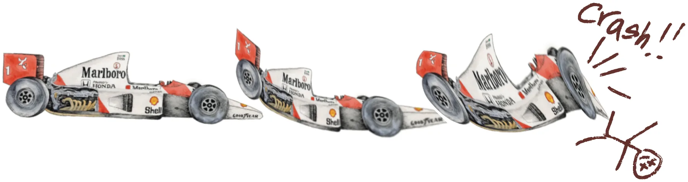
Deep within the crowd, I see a movement of hair that looks just like Scott’s. My heart skips a beat and my insides scream: he’s here!! I lean forward, putting my hand above my eyebrow, attempting to focus onto the spot within the crowd. My eyes are squinted into small lines, but the moment is gone. He’s not there. I sigh as my heart returns to its sinus rhythm.
The small jump of excitement I had just experienced deeply troubles me. Did I want him to be here? He had come to all my symposiums. He had never missed one. My heart had a melancholy throb that I had not experienced in a long time. God, I miss him.
“Maxine?”
I look up, and see the moderator looking at me expectantly. It’s my time to speak.
I clear my throat and stand up, stepping carefully towards the lectern. My speech races through my mind, my subconscious rehearsing it one last time.
The lights make my skin a sick-looking paste colour.
I wish there were more people in the crowd.
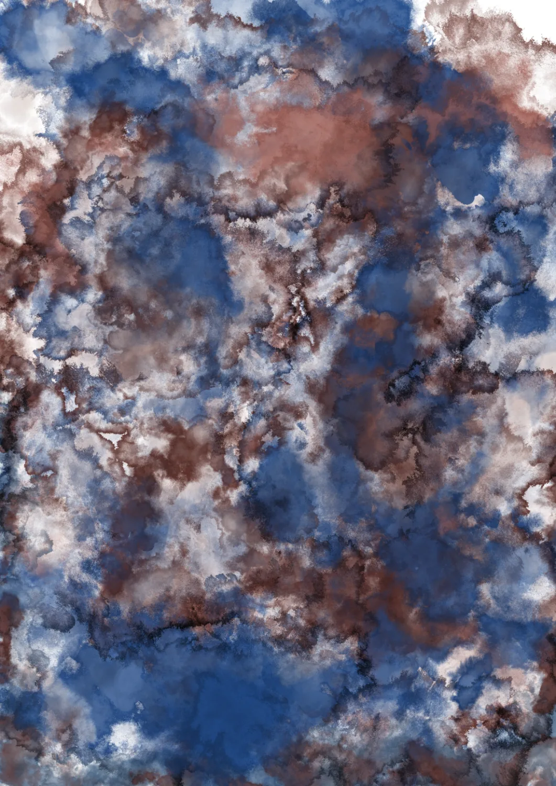
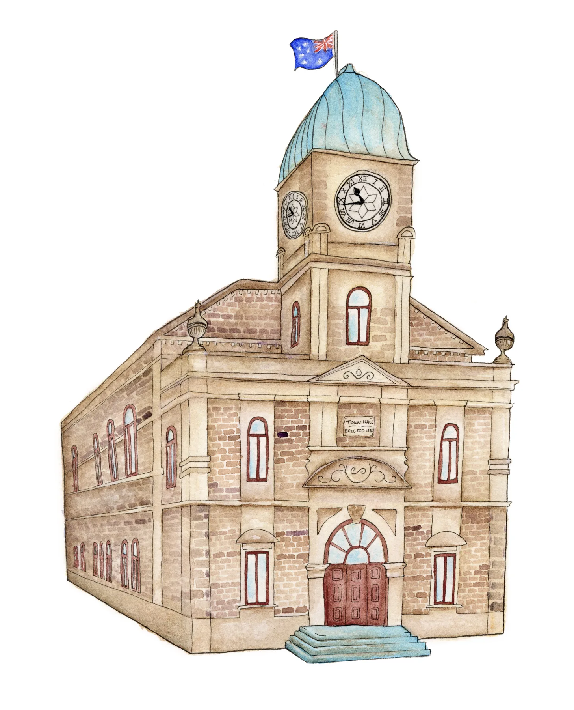
I sit on the wooden pew and listen as person after person stands on the stage and tells a story that is vaguely true. Remember how fiercely protective he was, and when he pulled that gun on that guy? Remember that time we arrived at the art gallery for the awards night, but a week too late? Or when he left the tennis rackets on top of the car, and then the car behind ran over it!
Ha! Ha! Isn’t his incompetence so funny?
The crowd gives a sombre, reminiscent chuckle. My mother-in-law, sat next to me, smiles and wipes away a tear. She clutches at my arm.
“We were so lucky to know him, weren’t we, Maxine?”
I nod mutely in response.
I wish these people would tell some better stories. I hate when people try and be humorous at funerals. Someone has died, for God’s sake. My husband has died. I felt like standing up and screaming:
“DOES ANYONE HAVE A POSITIVE STORY?”
I’ll stand upon the stage and bargain like an auctioneer. Anyone? Anyone? Do we have Scott helping someone for $50? Anyone? At the back! Scott being a leader for $100! Instead, I sit on the wooden pew and let the monotone wash over me, the filtered memories creating a cosy insulation.
I remember, too. But the memories that dance within my mind are tainted with muddy ochre, an ugly reminiscing I would rather avoid. His enlarged printed face smiles down at me from atop his coffin, with “Rest in Peace, Scott Davies” written in cursive across the print. I glare at the print. Oh, I remember, Scott.
I remember when you had flown to a Southeast Asian land, and I hadn’t heard from you in weeks. I can imagine the darkened rooms you found yourself in, the flesh you touched. The vile, demeaning things you said to those women.
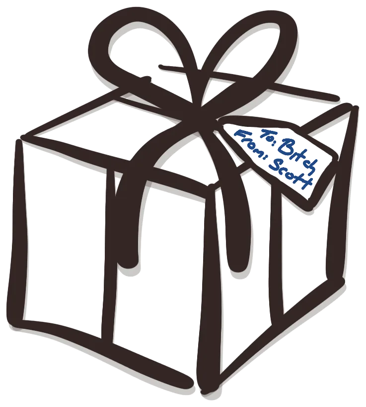
I remember your begrudging attitude towards buying me a gift. Your instant snicker after I opened it, wrapped with the reminder that I would have gotten something nicer if I hadn’t been a bitch.
I remember the names you called me, and the subtle attacks veiled as jokes. I shake my head and look at the notes I had neatly printed onto cardstock. I let the anger at our inconsequential conclusion fade, comforted by the memory of us sitting together on the couch. I remind myself that for every bad memory, there’s ten good ones. It’ll be my turn to tell a vaguely true story next. Mine is about meeting the love of my life, and the joy of being married.
Isn’t karma so funny?
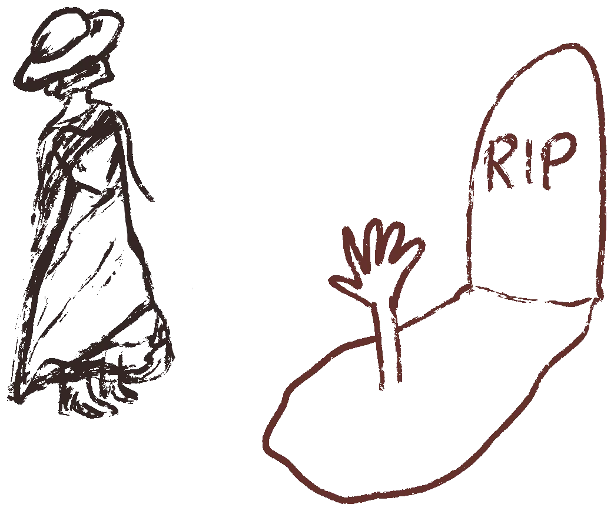
I thought the funeral would have been grander, with calla lilies gracing every surface. I imagined everyone would attend in black, with lace veils across their eyes and velvet gloves. His father is wearing a blue polo shirt! I couldn’t believe it, when I saw him walk into the room. I also would have liked to give Scott a marble headstone, with some ancient script along the top. I wish I had been granted access to his “our” bank accounts earlier, so I could have made it a more glamorous event. My thick skirt, handkerchief and boots now felt silly, surrounded by everyone else’s informality.
I had hoped it would rain.
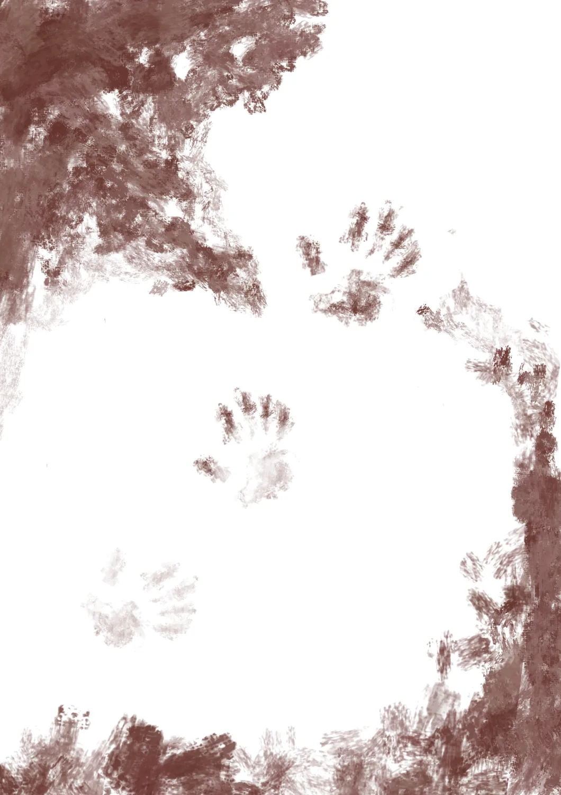
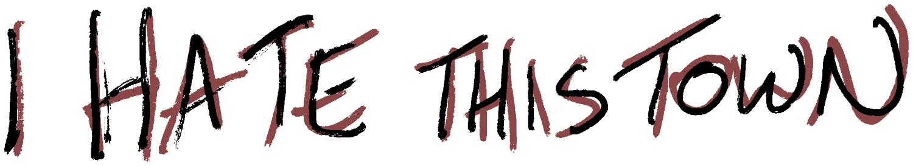
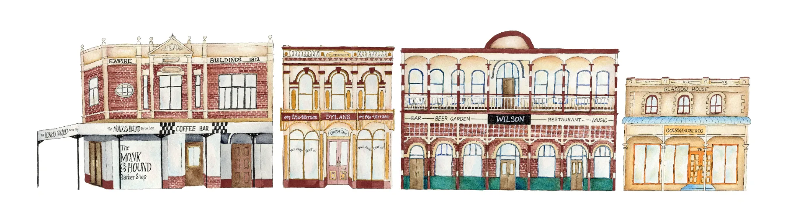
Happiness floats over the mountains, down the valley, through the town centre and into the polluted waterways, accessed by the small drain opposite my house. It never stops to say hello. My neighbours have it on subscription, parcel delivered every fortnight. I’m not sure how to get on the mailing list.
I know my neighbours have it. I can tell by the way they park their cars, bring in their shopping, greet each other after a day of work. I can tell by the way their kids squeal on the weekend, as if they are having fun. The noise outside is deafening. Squeals, screams, laughs. An awful bird has nested in the singular tree in our backyard.
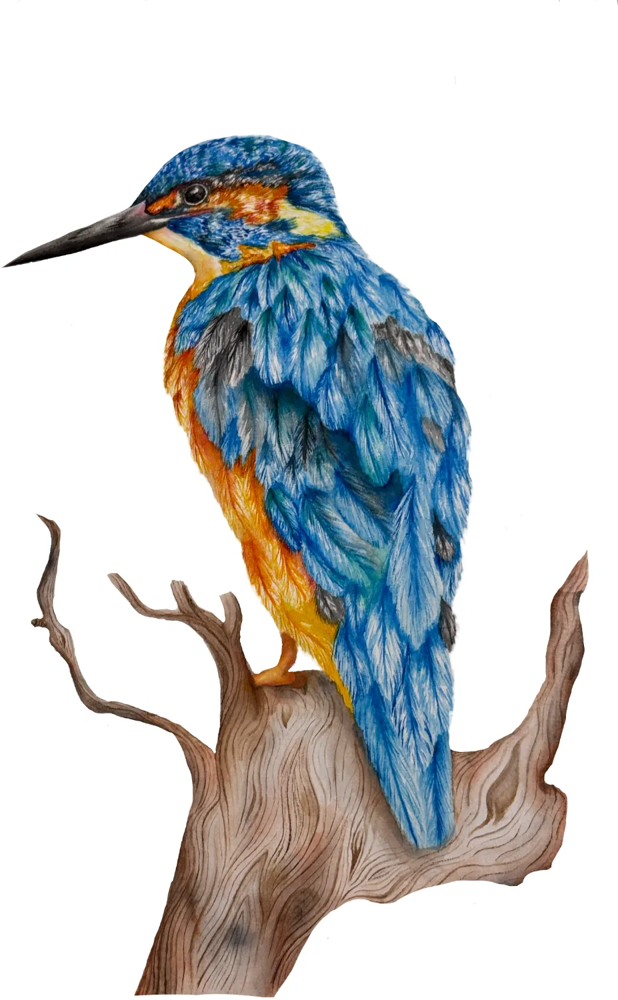
Coo.
Coo.Coo.
Coo.Coo.Coo.
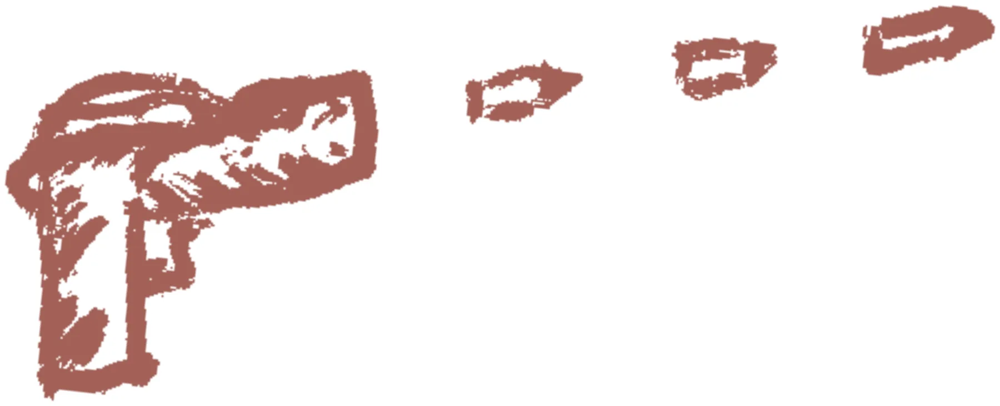
Google: Fine for killing a native bird Google: The quietest way to kill a bird Google: Can animals go in the green bin?
The clock in the kitchen, recently installed, ticks an irritating rhythm. It echoes throughout the entire house. I can hear it when I’m trying to fall asleep, from my bedroom upstairs. I can hear it with the doors closed. I sometimes wonder if I can actually hear it, or if it’s my mind playing deadly tricks. I sit up, closing my eyes, listening intently. Nope, it’s unmistakable, I can definitely hear it.
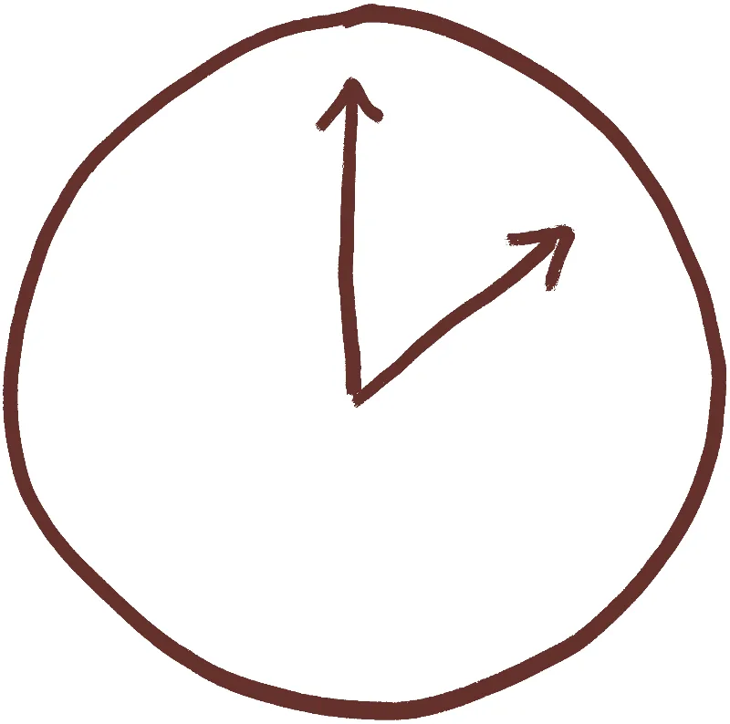
Tick.
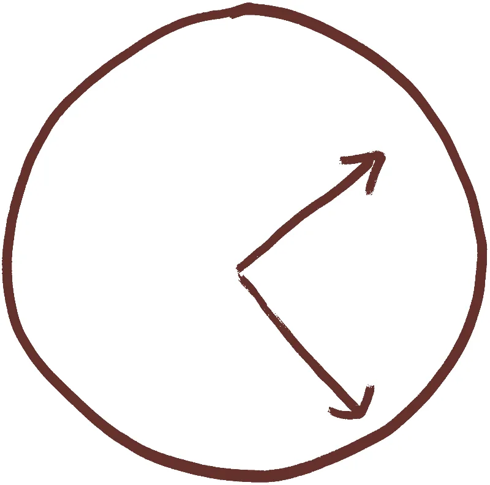
Tick.Tick.
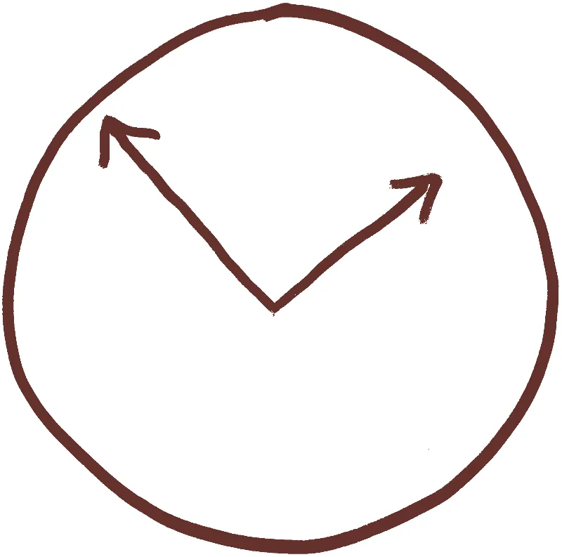
Tick.Tick.Tick.
Scott is due to arrive home any minute now. Dinner is placed delicately on the table. Roast potatoes with rosemary from the garden, and a small pile of blush-coloured beef, and chargrilled broccolini, and mashed sweet potato, and butter-covered brussels sprouts. Looking at the dinner makes me irritated. My insides have been bubbling lately, my hands constantly clenched. The irritation comes from the unshakable feeling that tomorrow I’ll have to do it all again.
I hear the door click and turn in time to see him walk through the door.
“Hello, Maxy!” he says, his fingers and face covered with flecks of Earth. He leaves five perfect fingerprints on the door as he closes it.
“Hey, honey!” I walk over and give him a kiss, keeping my hand firmly placed on his chest, to not blacken my shirt. He wanders into the dining room, observing the dinner and picking up a piece of meat with his fingers. I take mental note to eat from the opposite side of the plate, so as not to consume any chemicals left behind from God-knows-what was on his hands.
“The kitchen is a mess!” he turns to me, a big grin on his face. His version of a joke. I feel my hands instinctively wrap around the carving knife, left upon the bench.
Within three steps, I am by his side. And, with one more step, I’m in his side.
Artificial intelligence (Claude) was used for assistance to build this interactive web version of the story. The writing and the drawings are the author’s own.